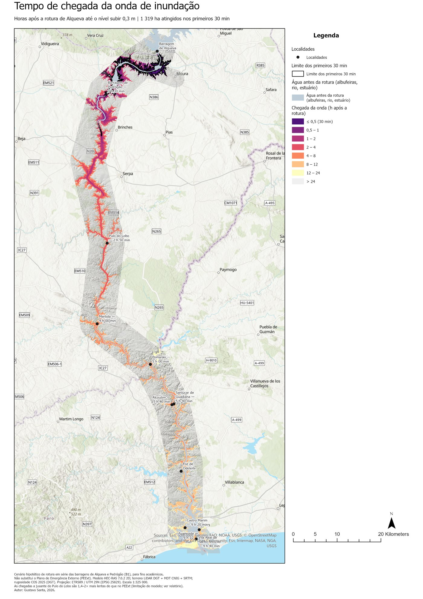
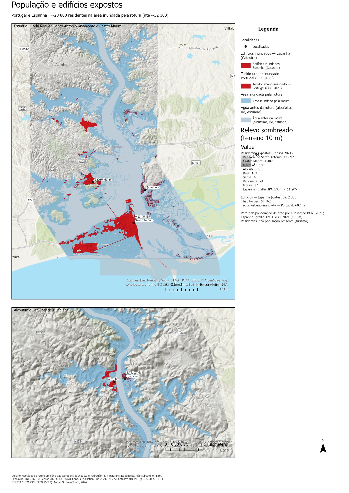
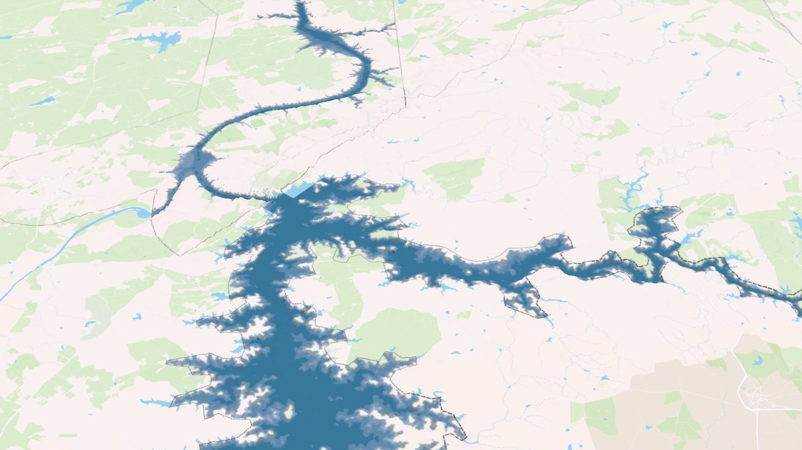

Mapas
Quatro mapas A3 feitos em ArcGIS Pro (clica para ampliar).




Um cenário hipotético de rotura das barragens de Alqueva e Pedrógão, modelado em 2D, mostra como a onda de cheia desceria o Guadiana até ao mar em 24 horas, e quem ficaria no seu caminho.
Cenário B1: Alqueva rompe com a albufeira a 154 m; Pedrógão rompe em cascata 29 minutos depois.
Horas depois da rotura de Alqueva até a água subir 0,3 m.
Quatro mapas A3 feitos em ArcGIS Pro (clica para ampliar).


Do terreno aos produtos, tudo reprodutível com os scripts do repositório.
Cena em ArcGIS Pro com relevo exagerado 3× e câmara oblíqua a seguir a frente da onda.

Resumo numa página A4.
Teste de propagação com o hidrograma do PEExt (modelo congelado no plano P12).
| Perfil | Qmax modelo / PEExt (m³/s) | Nível máx. − PEExt | Chegada modelo / PEExt (h) |
|---|---|---|---|
| Pedrógão (+0,5 km) | 37 148 / 56 471 | +2,0 m | 0,50 / 0,42 |
| Enxoé | 24 928 / 35 302 | +0,5 m | 1,08 / 0,79 |
| km 55 | 22 611 / 30 498 | +2,5 m | 1,58 / 1,01 |
| Pulo do Lobo | 20 672 / 27 549 | +19,2 m | 2,33 / 1,69 |
| Mértola | 19 971 / 25 500 | +10,1 m | 3,58 / 1,82 |
| Alcoutim | 18 932 / 22 883 | +8,5 m | 5,17 / 2,64 |
O cenário B1 esvazia quase toda a albufeira, por isso é mais gravoso do que a tabela do PEExt (caudais 2 a 2,5× maiores a jusante de Pedrógão). Os dois cenários não são diretamente comparáveis.